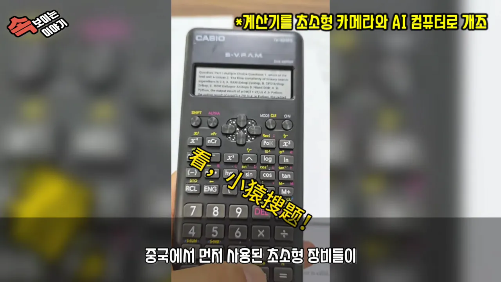
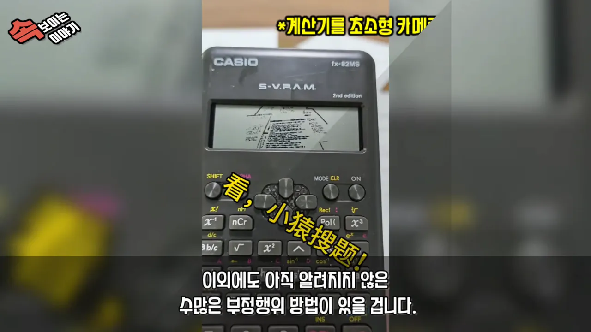
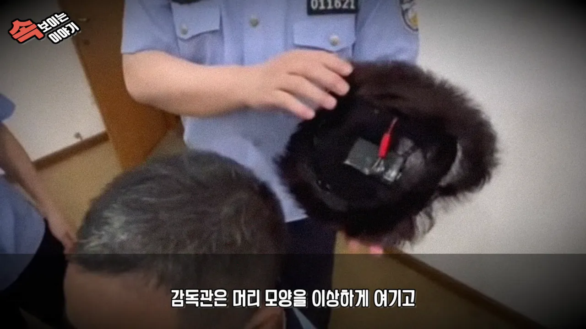
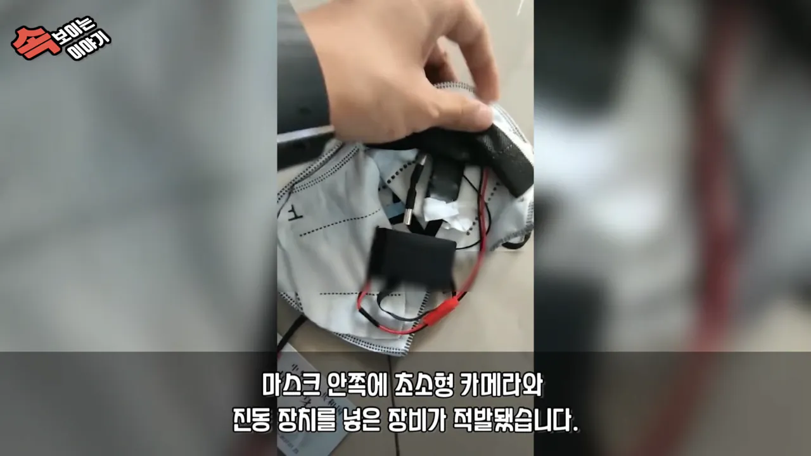
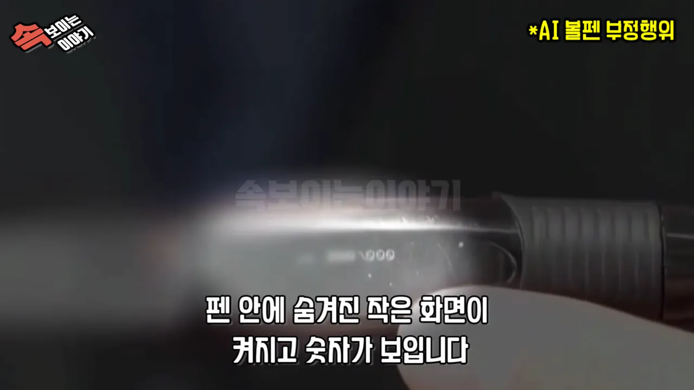
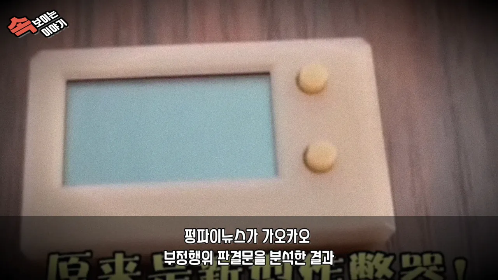

물병에 카메라 닮
적발되면 물병을 뒤집어 장비 먹통화

중국 수능에서 쓸 수 있는 지우개를 지정해주는데 거기 옆에 화면닮
국내서 나오는 장비와 수법은 이미 중국에서 한번 유행하고 지나감
철지난 재고를 한국에 팔았더니 수요가 급증해서 업자가 몰림
https://youtu.be/L82eSDa08bQ
https://bbs.ruliweb.com/community/board/300143/read/77454128
나루토 닌자 시험 생각나네